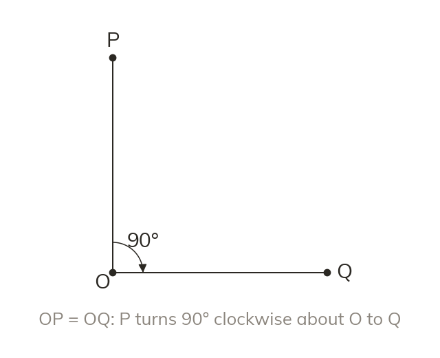

Centre, angle and direction
A rotation turns every point about a fixed centre. Every point turns through the same angle, the same way. Each point stays the same distance from the centre.
A rotation turns every point about a fixed centre, through the same angle and in the same direction. Each point stays the same distance from the centre, and the centre itself does not move.